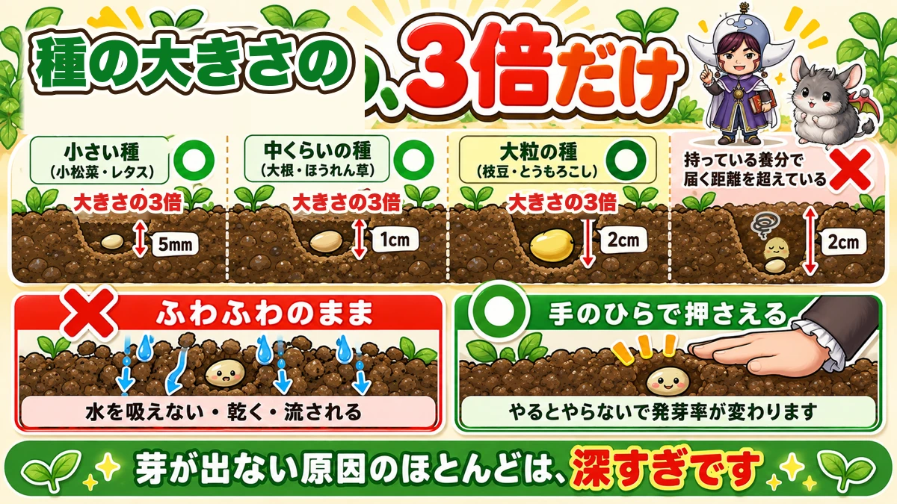
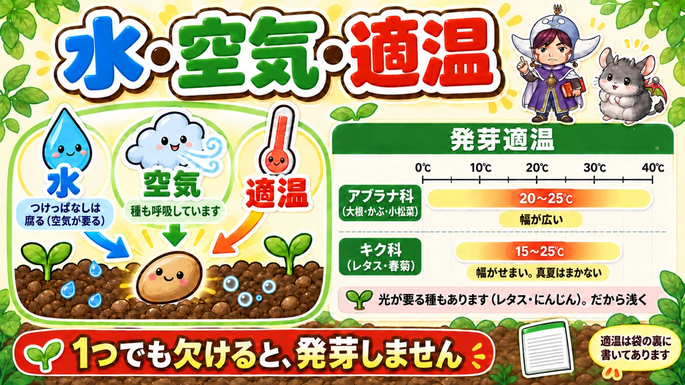
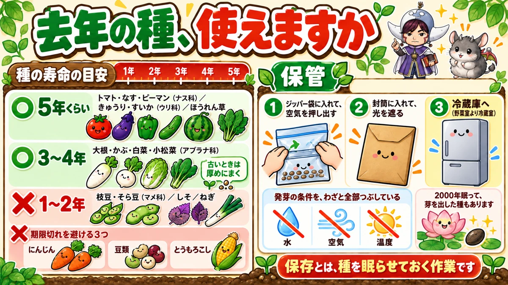

Cover a seed with 3× its own size 🌱 Why most seeds never come up

🌱 "I sowed a whole row and barely half came up."
🌱 "The ones that did come up are all at different stages."
🌱 "I have seed left over from last year — is it still any good?"
Hello, I'm Eiko. I've been growing vegetables for eight years, organically and without pesticides. I also hold a teaching licence in science, which is why these articles always end with the mechanism rather than just the instruction.
Let me give you the whole article in one line before we start.
Cover a seed with three times its own size in soil.
And nearly every seed that fails to come up was simply buried too deep 🌱
Depth is decided by the size of the seed

What this diagram says （図解の文字）
- Small seeds (komatsuna, lettuce) — 3× the seed's size — about 1/5 in (5 mm)
- Medium seeds (daikon radish, spinach) — 3× the seed's size — about 3/8 in (1 cm)
- Large seeds (edamame, sweetcorn) — 3× the seed's size — about 3/4 in (2 cm)
- ✗ Deeper than that: "further than the seed's own food reserve can carry it."
- ✗ Left fluffy: "can't take up water — dries out — washes away."
- ○ Press it down with your palm: "doing this changes the germination rate."
- Bottom line: "Nearly every failure to sprout is simply too deep."
Three times — that's the whole rule
You don't need a ruler. Look at the seed and think "three of those stacked up." That's close enough.
Why deep seeds never arrive
This is the part worth understanding.
A seed reaches the surface on the food packed inside it, and nothing else. It has to push soil aside all the way up to the light. If that distance is too long, it runs out of fuel on the way and stops underground.
Small seeds carry less food. That is the entire reason small seeds go shallow — not tradition, not preference. Arithmetic.
The mistake almost everyone makes once
Carrots. They look so small and light that you think "this will wash away", so you bury them half an inch deep — and the whole row stays empty. Carrot seed wants to be barely covered 😅
After sowing, press the soil down
Don't stop at "covered"
Once the soil is on, there is one more step: press it down gently with the flat of your hand. In Japanese this is called chin-atsu — firming. It looks like nothing. It changes the germination rate.
What happens if you skip it
- The seed isn't touching soil, so it can't draw up water
- Air gaps dry the seed out
- Watering or rain washes the seed sideways
- A root that does emerge stalls in an air pocket
When someone tells me "I sowed it and nothing came up", it is almost always depth, or this.
How hard?
Don't stamp on it. A few firm pats with your palm is right. In a container, levelling it with a board or the back of your hand is enough.
Then cover the bed with fleece
Most people stop after firming. There's one more step that lifts germination again: lay garden fleece (row cover) loosely straight onto the bed — no hoops, just resting on the soil.
That one sheet does three jobs at once:
- the soil stops drying out
- heavy rain can't wash the seed away
- the soft new seedlings can't be eaten
For autumn sowings, those three are exactly the three ways it goes wrong. One sheet closes all of them.
Don't take it off when they sprout
This is the part people get wrong. Germination is not the end of the fleece's job.
- Once they're up, move from flat cover to a low fleece tunnel
- Leave it on through winter
- When it gets colder still, add plastic over the top
If you've been treating fleece as a thing you put away after germination, try leaving it on until spring. The difference in growth is not subtle.
And yes, it lets through more light than you'd expect — shade is not the problem people assume. Buy the proper garden grade, not the cheapest sheet you can find; good fleece lasts years.
Germination needs exactly three things

What this diagram says （図解の文字）
- Water — but not standing water: "leave it soaking and it rots — it needs air."
- Air — "seeds breathe too."
- The right temperature — shown on a scale from 0 to 40 °C (32–104 °F):
- Brassicas (daikon, turnip, komatsuna): 68–77 °F (20–25 °C) — "a wide window"
- Daisy family (lettuce, shungiku): 59–77 °F (15–25 °C) — "narrow window; don't sow at the height of summer"
- "Some seeds need light too (lettuce, carrot). That's another reason to sow them shallow."
- "Miss any one of the three and nothing germinates."
- "The right temperature is printed on the back of the packet."
Water — too much is also wrong
Leave seed sitting in water and it rots, because it still needs to breathe. Not soggy. Damp. That's the target.
Temperature is not the same for every family
Brassicas are forgiving — a wide band, and they tolerate heat. The daisy family is fussy: lettuce simply will not come up in high summer, and that is why, not bad luck.
It's on the back of the packet. Turn it over before you sow.
Four reasons seeds don't come up
① Too deep. The most common by a distance.
② Not firmed. Second most common.
③ You fertilised and sowed the same day. This one gets missed. Fresh fertiliser makes the soil solution too concentrated, and the roots can no longer draw up water. Leave a week after a quick-release feed. With un-rotted organic matter, leave longer — as it breaks down it gives off heat and gas, and that damages seed. Two weeks minimum after base dressing is the safe habit.
④ The timing is off. The two reliable windows are spring, once the soil has warmed, and late summer into autumn, about 8–10 weeks before your first frost. Seeds will germinate outside those windows; it's what happens afterwards that gets difficult. When something "just doesn't do well", it's usually the calendar, not you.
Is last year's seed still good?

What this diagram says （図解の文字）
- About 5 years — tomato, aubergine, pepper (nightshades); cucumber, watermelon (cucurbits); spinach
- 3–4 years — daikon, turnip, Chinese cabbage, komatsuna (brassicas) — "if it's old, sow it thicker"
- 1–2 years — edamame, broad bean (legumes); shiso; spring onion
- Three to buy fresh: carrot, beans, sweetcorn
- Storing: 1 — zip bag, push the air out. 2 — inside an envelope, to block light. 3 — into the fridge (the main compartment, not the crisper)
- "You are deliberately removing all three conditions for germination: water, air, warmth."
- "Some seeds have slept 2,000 years and still sprouted. Storing seed is the art of keeping it asleep."
It depends on the plant family
Keeps well (about 5 years): tomato, aubergine, pepper, cucumber, melon, spinach.
Middling (3–4 years): the brassicas — daikon, turnip, Chinese cabbage, komatsuna.
Short (1–2 years): beans and peas, shiso, spring onion.
Three I'd always buy fresh
- Carrot — germination drops, and old seed throws more forked roots
- Beans and peas — germination falls off a cliff
- Sweetcorn — the same
Sow a whole row of dead seed and you've lost a month. For these three, buy the packet.
One warning about sowing thickly
"Sow it thick and thin out the extras" — I used to say that too. The real cost of sowing too thick isn't waste. It's that you can no longer thin. When seedlings come up in a clump, pulling one lifts its neighbour with it, because the roots are tangled. The plant you wanted to keep comes loose. Spacing them as you sow is less work in the end.
Store it in the fridge
- Zip bag, and push the air out
- Inside an envelope, to block the light
- Into the fridge — the main compartment, not the crisper drawer
It beats the kitchen drawer by a long way. Though honestly — I don't always get as far as the fridge myself. Just keep it somewhere cool and dark.
🔬 The science: a seed is a folded-up plant
Cut a seed in half and it is built like an egg.
- the coat — the eggshell
- the food store — the yolk and white
- a small part at the centre — the tiny white spot on a yolk, the part that becomes the chick
And inside that centre, the part that will become the root and the part that will become the leaves are already formed, folded up and waiting.
A seed isn't a beginning. It's a plant, packed.
The root comes out first — basically, the root — because until it can drink, nothing else is possible.
Which brings us back to the top of the page. Everything a seed does on the way up, it does on the food it was packed with. Bury it deeper than that food can carry it, and it does everything right, in the dark, and still never arrives.
To sum up
- ✅ Cover with three times the seed's own size — 1/5 in small, 3/8 in medium, 3/4 in large
- ✅ Firm it with your palm — soil must touch seed
- ✅ Lay fleece, and leave it on past germination
- ✅ Water, air, the right temperature — miss one and nothing happens
- ✅ Two weeks between fertiliser and seed
- ✅ Carrot, beans, sweetcorn — buy fresh
If you've had a row fail on you this season, my guess is depth. Try half what you did last time. Thank you for reading 🌱